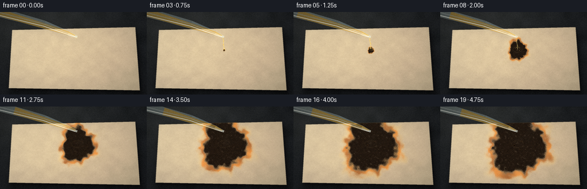
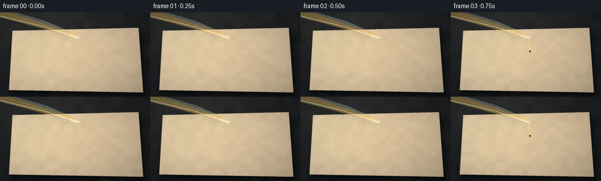
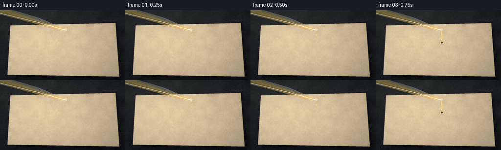
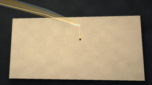
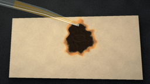
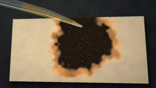
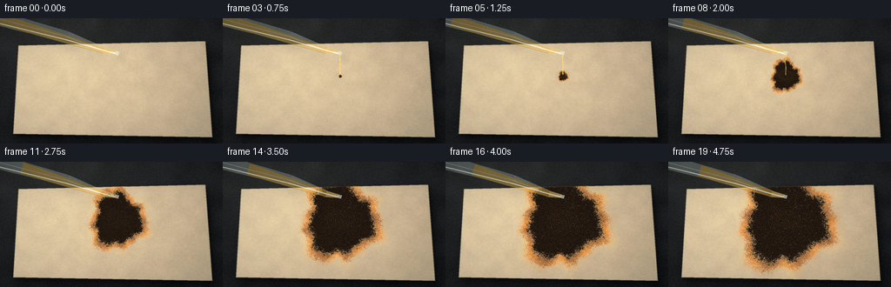
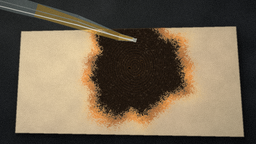
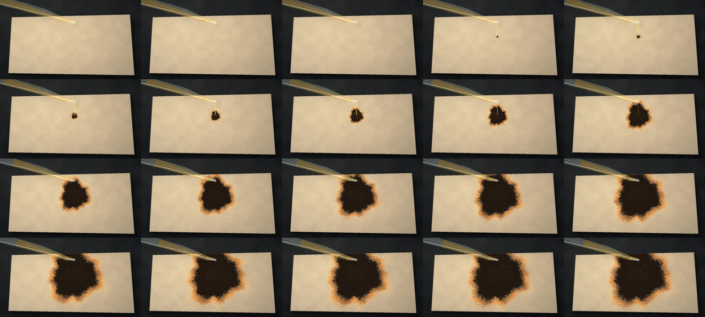

CODING AGENTS AS PIXEL WORLD MODELS
traex/DeepSeek-V4.1-Flash · phygen_153
点击播放 · 原生 RGB 像素
逐轮保存的候选
回放视频、检查图与代码变化。
每份候选均可单独播放。实际图片检查记录在下方工具轨迹中。
候选 01播放与检查图
点击播放 · 原生 RGB 像素


展开代码变化
--- 上一保存版本
+++ 本次保存版本
@@ -0,0 +1,531 @@
+from pathlib import Path
+
+import numpy as np
+from PIL import Image, ImageDraw, ImageFilter
+
+import artifact_io
+
+
+W, H = 256, 144
+SS = 4
+RW, RH = W * SS, H * SS
+FRAMES = 20
+SEED = 7319
+
+
+def clamp01(x):
+ return np.clip(x, 0.0, 1.0)
+
+
+def smoothstep(edge0, edge1, x):
+ t = clamp01((x - edge0) / (edge1 - edge0))
+ return t * t * (3.0 - 2.0 * t)
+
+
+def smooth_noise(rng, shape, scale):
+ h, w = shape
+ small = rng.random((max(2, h // scale + 2), max(2, w // scale + 2))).astype(np.float32)
+ img = Image.fromarray((small * 255).astype(np.uint8), "L").resize((w, h), Image.Resampling.BICUBIC)
+ return np.asarray(img, dtype=np.float32) / 255.0
+
+
+def rgba_from_array(arr):
+ return Image.fromarray(np.clip(arr, 0, 255).astype(np.uint8), "RGBA")
+
+
+def polygon_mask(points, blur=0):
+ mask = Image.new("L", (RW, RH), 0)
+ ImageDraw.Draw(mask).polygon([(int(x * SS), int(y * SS)) for x, y in points], fill=255)
+ if blur:
+ mask = mask.filter(ImageFilter.GaussianBlur(blur * SS))
+ return np.asarray(mask, dtype=np.float32) / 255.0
+
+
+def draw_soft_shadow(base, points, offset, blur, opacity):
+ shadow = Image.new("RGBA", (RW, RH), (0, 0, 0, 0))
+ shifted = [(x + offset[0], y + offset[1]) for x, y in points]
+ ImageDraw.Draw(shadow).polygon(
+ [(int(x * SS), int(y * SS)) for x, y in shifted],
+ fill=(0, 0, 0, int(opacity)),
+ )
+ shadow = shadow.filter(ImageFilter.GaussianBlur(blur * SS))
+ return Image.alpha_composite(base, shadow)
+
+
+def line_quad(p0, p1, w0, w1):
+ p0 = np.asarray(p0, dtype=np.float32)
+ p1 = np.asarray(p1, dtype=np.float32)
+ direction = p1 - p0
+ direction /= np.linalg.norm(direction)
+ normal = np.array([-direction[1], direction[0]], dtype=np.float32)
+ return [
+ tuple(p0 + normal * w0),
+ tuple(p0 - normal * w0),
+ tuple(p1 - normal * w1),
+ tuple(p1 + normal * w1),
+ ]
+
+
+def draw_glass_pipette(base, frame_index, tip, impact):
+ top = (-18.0, -4.0)
+ shoulder = (77.0, 21.0)
+ neck = (119.0, 37.0)
+ tube_end = (tip[0] - 1.2, tip[1] - 1.0)
+
+ # A cool cast shadow makes the glass sit above the sheet.
+ shadow = Image.new("RGBA", (RW, RH), (0, 0, 0, 0))
+ d = ImageDraw.Draw(shadow)
+ for pts, width in [
+ (line_quad(top, shoulder, 8.0, 5.5), 12),
+ (line_quad(shoulder, neck, 5.5, 3.4), 9),
+ (line_quad(neck, tube_end, 3.4, 2.3), 6),
+ ]:
+ d.polygon([(int(x * SS + 7 * SS), int(y * SS + 10 * SS)) for x, y in pts], fill=(5, 7, 9, width))
+ shadow = shadow.filter(ImageFilter.GaussianBlur(4.0 * SS))
+ base = Image.alpha_composite(base, shadow)
+
+ layer = Image.new("RGBA", (RW, RH), (0, 0, 0, 0))
+ d = ImageDraw.Draw(layer)
+
+ # Transparent glass body.
+ body_sections = [
+ (line_quad(top, shoulder, 9.0, 6.1), (191, 216, 216, 75)),
+ (line_quad(shoulder, neck, 6.1, 3.8), (190, 216, 217, 85)),
+ (line_quad(neck, tube_end, 3.8, 2.0), (197, 222, 221, 105)),
+ ]
+ for pts, fill in body_sections:
+ d.polygon([(int(x * SS), int(y * SS)) for x, y in pts], fill=fill)
+
+ # Acid inside the pipette; the level lowers a little during the pour.
+ acid_level = np.interp(frame_index, [0, 2, 10, 19], [0.08, 0.16, 0.44, 0.57])
+ acid_start = (
+ top[0] + (shoulder[0] - top[0]) * acid_level,
+ top[1] + (shoulder[1] - top[1]) * acid_level,
+ )
+ acid_pts = line_quad(acid_start, neck, 6.7, 3.5)
+ d.polygon([(int(x * SS), int(y * SS)) for x, y in acid_pts], fill=(223, 179, 70, 118))
+ d.polygon(
+ [(int(x * SS), int(y * SS)) for x, y in line_quad(neck, tube_end, 3.2, 1.5)],
+ fill=(230, 190, 84, 150),
+ )
+
+ # Clear rim, dark edge, and long specular highlight.
+ for p0, p1, w0, w1, fill, width in [
+ (top, shoulder, 9.0, 6.1, (228, 243, 242, 110), 2),
+ (shoulder, neck, 6.1, 3.8, (225, 241, 240, 125), 2),
+ (neck, tube_end, 3.8, 2.0, (240, 249, 245, 165), 2),
+ ]:
+ d.line([(int(p0[0] * SS), int(p0[1] * SS)), (int(p1[0] * SS), int(p1[1] * SS))],
+ fill=fill, width=max(1, int(width * SS * 0.55)))
+
+ direction = np.array(neck) - np.array(top)
+ direction = direction / np.linalg.norm(direction)
+ normal = np.array([-direction[1], direction[0]])
+ highlight_start = np.array(top) + normal * 5.6
+ highlight_mid = np.array(shoulder) + normal * 3.7
+ highlight_end = np.array(tube_end) + normal * 1.2
+ d.line(
+ [(int(highlight_start[0] * SS), int(highlight_start[1] * SS)),
+ (int(highlight_mid[0] * SS), int(highlight_mid[1] * SS)),
+ (int(highlight_end[0] * SS), int(highlight_end[1] * SS))],
+ fill=(248, 253, 249, 185),
+ width=int(1.4 * SS),
+ joint="curve",
+ )
+ d.line(
+ [(int((top[0] + normal[0] * 8.0) * SS), int((top[1] + normal[1] * 8.0) * SS)),
+ (int((neck[0] + normal[0] * 3.3) * SS), int((neck[1] + normal[1] * 3.3) * SS))],
+ fill=(66, 76, 77, 95),
+ width=int(0.7 * SS),
+ )
+
+ # A tiny glass collar at the delivery tip.
+ tip_poly = [
+ (tip[0] - 2.0, tip[1] - 2.4),
+ (tip[0] + 2.1, tip[1] - 2.0),
+ (tip[0] + 1.25, tip[1] + 1.4),
+ (tip[0] - 1.1, tip[1] + 1.2),
+ ]
+ d.polygon([(int(x * SS), int(y * SS)) for x, y in tip_poly], fill=(220, 235, 228, 150), outline=(245, 252, 247, 190))
+ return Image.alpha_composite(base, layer)
+
+
+def draw_stream(base, frame_index, tip, impact):
+ layer = Image.new("RGBA", (RW, RH), (0, 0, 0, 0))
+ d = ImageDraw.Draw(layer)
+
+ if frame_index < 2:
+ radius = 0.8 + 0.55 * frame_index
+ cx, cy = tip[0], tip[1] + 0.8 + radius * 0.55
+ d.ellipse(
+ ((cx - radius) * SS, (cy - radius * 1.15) * SS, (cx + radius) * SS, (cy + radius * 1.15) * SS),
+ fill=(238, 203, 105, 185),
+ outline=(255, 239, 173, 220),
+ width=max(1, int(0.45 * SS)),
+ )
+ d.ellipse(
+ ((cx - radius * 0.33) * SS, (cy - radius * 0.72) * SS,
+ (cx + radius * 0.05) * SS, (cy - radius * 0.2) * SS),
+ fill=(255, 250, 213, 170),
+ )
+ return Image.alpha_composite(base, layer)
+
+ if frame_index == 2:
+ fall_y = tip[1] + 10.0
+ radius = 1.35
+ d.ellipse(
+ ((tip[0] - radius * 0.72) * SS, (fall_y - radius) * SS,
+ (tip[0] + radius * 0.72) * SS, (fall_y + radius * 1.6) * SS),
+ fill=(236, 198, 91, 205),
+ outline=(255, 239, 174, 215),
+ width=max(1, int(0.35 * SS)),
+ )
+ return Image.alpha_composite(base, layer)
+
+ # The stream is thickest at the beginning and breaks into droplets late.
+ strength = 1.0
+ if frame_index >= 8:
+ strength = max(0.0, 1.0 - (frame_index - 7) / 3.0)
+ if strength <= 0:
+ return base
+
+ length = max(1.0, impact[1] - tip[1] - 2.0)
+ samples = 26
+ left, right = [], []
+ for i in range(samples + 1):
+ t = i / samples
+ y = tip[1] + 1.5 + length * t
+ wobble = 0.42 * np.sin(t * 10.0 + frame_index * 1.7) * np.sin(np.pi * t)
+ half = (0.62 + 0.22 * np.sin(t * 18.0 + frame_index)) * (0.62 + 0.38 * strength)
+ x = tip[0] + (impact[0] - tip[0]) * t + wobble
+ left.append(((x - half) * SS, y * SS))
+ right.append(((x + half) * SS, y * SS))
+ stream_poly = left + right[::-1]
+ d.polygon(stream_poly, fill=(233, 199, 91, int(178 * strength)))
+ d.line(
+ [((tip[0] - 0.18) * SS, (tip[1] + 2.0) * SS),
+ ((impact[0] - 0.12) * SS, (impact[1] - 1.0) * SS)],
+ fill=(255, 244, 177, int(195 * strength)),
+ width=max(1, int(0.48 * SS)),
+ )
+
+ # Moving glints travel down the stream.
+ for k in range(4):
+ phase = (frame_index * 0.31 + k / 4.0) % 1.0
+ y = tip[1] + 3.0 + phase * (impact[1] - tip[1] - 4.0)
+ x = tip[0] + (impact[0] - tip[0]) * phase
+ r = 0.34
+ d.ellipse(((x - r) * SS, (y - r * 1.8) * SS, (x + r) * SS, (y + r * 1.8) * SS),
+ fill=(255, 251, 220, int(145 * strength)))
+ return Image.alpha_composite(base, layer)
+
+
+def draw_impact_splash(base, frame_index, impact):
+ layer = Image.new("RGBA", (RW, RH), (0, 0, 0, 0))
+ d = ImageDraw.Draw(layer)
+ if frame_index >= 3:
+ age = min(7, frame_index - 3)
+ rx = 2.2 + age * 1.2
+ ry = rx * 0.55
+ alpha = int(max(28, 130 - age * 13))
+ d.ellipse(
+ ((impact[0] - rx) * SS, (impact[1] - ry) * SS,
+ (impact[0] + rx) * SS, (impact[1] + ry) * SS),
+ outline=(248, 222, 134, alpha),
+ width=max(1, int(0.45 * SS)),
+ )
+ if 3 <= frame_index <= 8:
+ for k in range(7):
+ ang = -2.7 + k * 0.72 + 0.16 * np.sin(frame_index + k)
+ dist = 1.4 + 0.6 * (frame_index - 3) + 0.5 * (k % 3)
+ x = impact[0] + np.cos(ang) * dist
+ y = impact[1] + np.sin(ang) * dist * 0.55 - (frame_index - 3) * 0.22
+ r = 0.32 + 0.08 * (k % 2)
+ d.ellipse(((x - r) * SS, (y - r) * SS, (x + r) * SS, (y + r) * SS),
+ fill=(244, 209, 105, 145))
+ return Image.alpha_composite(base, layer)
+
+
+def draw_reaction(base, frame_index, center, paper_mask, edge_noise, char_noise, fine_noise):
+ if frame_index < 3:
+ return base
+
+ radii = [0.0, 0.0, 0.0, 1.8, 3.4, 5.5, 8.6, 12.4, 17.0, 21.7, 26.5, 31.2, 35.5, 39.3, 42.7, 45.5, 47.8, 49.7, 51.2, 52.5]
+ radius = radii[frame_index]
+ yy, xx = np.mgrid[0:RH, 0:RW].astype(np.float32)
+ dx = (xx / SS - center[0])
+ dy = (yy / SS - center[1])
+ theta = np.arctan2(dy, dx)
+ radial = np.sqrt((dx / 1.03) ** 2 + (dy / 1.16) ** 2)
+
+ lobe = (
+ 1.0
+ + 0.105 * np.sin(3.0 * theta + 0.75 + frame_index * 0.018)
+ + 0.057 * np.sin(7.0 * theta - 1.05)
+ + 0.034 * np.sin(13.0 * theta + 2.1)
+ )
+ front_noise = (edge_noise - 0.5) * 0.16 + (fine_noise - 0.5) * 0.035
+ dnorm = radial / max(radius, 0.1) / lobe + front_noise
+
+ wet = smoothstep(1.17, 0.98, dnorm) * paper_mask
+ char = smoothstep(0.93, 0.73, dnorm) * paper_mask
+ rim = np.exp(-((dnorm - 0.91) / 0.075) ** 2) * paper_mask
+ outer_wet = np.exp(-((dnorm - 1.04) / 0.16) ** 2) * paper_mask
+
+ arr = np.asarray(base, dtype=np.float32)
+ paper_rgb = arr[:, :, :3].copy()
+
+ # Acid wets and darkens the paper before the blackened core forms.
+ wet_strength = 0.20 + 0.06 * np.sin(frame_index * 0.9)
+ wet_color = np.array([226.0, 181.0, 93.0], dtype=np.float32)
+ paper_rgb = paper_rgb * (1.0 - wet[..., None] * wet_strength) + wet_color * wet[..., None] * wet_strength
+
+ # Fine, fibrous texture keeps the burnt area from looking like a flat disc.
+ texture = 0.62 * char_noise + 0.26 * fine_noise + 0.12 * edge_noise
+ char_luma = np.clip(0.50 + 0.52 * texture, 0.25, 1.0)
+ dark = np.stack(
+ [
+ 14.0 + 25.0 * char_luma,
+ 11.0 + 17.0 * char_luma,
+ 8.0 + 11.0 * char_luma,
+ ],
+ axis=-1,
+ )
+ ash = smoothstep(0.73, 0.91, texture) * smoothstep(8, 19, frame_index) * 0.46
+ dark = dark * (1.0 - ash[..., None]) + np.array([95.0, 86.0, 73.0]) * ash[..., None]
+ paper_rgb = paper_rgb * (1.0 - char[..., None]) + dark * char[..., None]
+
+ # Brown-to-amber reaction front, with a narrow glossy highlight.
+ rim_color = np.array([150.0, 71.0, 21.0], dtype=np.float32)
+ rim_glow = np.array([242.0, 143.0, 41.0], dtype=np.float32)
+ rim_mix = np.clip(0.45 + 0.36 * np.sin(9.0 * theta + frame_index * 0.35), 0.0, 0.9)
+ current_rim = rim_color * (1.0 - rim_mix[..., None]) + rim_glow * rim_mix[..., None]
+ paper_rgb = paper_rgb * (1.0 - rim[..., None] * 0.68) + current_rim * rim[..., None] * 0.68
+
+ gloss = outer_wet * np.clip(0.35 + 0.65 * np.sin(6.0 * theta - 1.2), 0.0, 1.0)
+ paper_rgb = paper_rgb * (1.0 - gloss[..., None] * 0.15) + np.array([255.0, 224.0, 139.0]) * gloss[..., None] * 0.15
+
+ # Concentric reaction striations appear inside the oldest part of the stain.
+ age = smoothstep(7, 15, frame_index) * smoothstep(0.78, 0.2, dnorm)
+ striation = 0.5 + 0.5 * np.sin(radial * 2.9 - frame_index * 0.22 + 1.4 * edge_noise)
+ paper_rgb += (striation[..., None] - 0.45) * age[..., None] * np.array([13.0, 9.0, 5.0])
+
+ arr[:, :, :3] = np.clip(paper_rgb, 0, 255)
+ out = Image.fromarray(arr.astype(np.uint8), "RGBA")
+
+ # Bubbles cluster along the active front and pop as the reaction slows.
+ bubbles = Image.new("RGBA", (RW, RH), (0, 0, 0, 0))
+ d = ImageDraw.Draw(bubbles)
+ bubble_angles = [-2.55, -2.15, -1.68, -1.15, -0.72, -0.22, 0.28, 0.72, 1.18, 1.72, 2.14, 2.66]
+ for i, ang in enumerate(bubble_angles):
+ birth = 4 + i % 4
+ life = 3 + (i * 5) % 6
+ if frame_index < birth or frame_index > birth + life:
+ continue
+ pulse = 0.5 + 0.5 * np.sin((frame_index - birth) * 1.7 + i)
+ rr = 0.58 + 0.34 * pulse
+ rr *= max(0.0, 1.0 - max(0, frame_index - (birth + life - 2)) / 3.0)
+ lobe_at_angle = (
+ 1.0
+ + 0.105 * np.sin(3.0 * ang + 0.75)
+ + 0.057 * np.sin(7.0 * ang - 1.05)
+ + 0.034 * np.sin(13.0 * ang + 2.1)
+ )
+ dist = radius * (0.86 + 0.04 * np.sin(i * 2.3)) * lobe_at_angle
+ x = center[0] + np.cos(ang) * dist
+ y = center[1] + np.sin(ang) * dist * 1.12
+ d.ellipse(((x - rr) * SS, (y - rr) * SS, (x + rr) * SS, (y + rr) * SS),
+ fill=(96, 62, 27, 125), outline=(239, 175, 77, 150), width=max(1, int(0.28 * SS)))
+ d.ellipse(((x - rr * 0.36) * SS, (y - rr * 0.44) * SS,
+ (x - rr * 0.02) * SS, (y - rr * 0.08) * SS),
+ fill=(255, 235, 171, 175))
+ out = Image.alpha_composite(out, bubbles)
+
+ # A few burnt-through points open late in the timelapse.
+ holes = Image.new("RGBA", (RW, RH), (0, 0, 0, 0))
+ d = ImageDraw.Draw(holes)
+ if frame_index >= 12:
+ hole_specs = [
+ (-5.5, 1.5, 1.7, 1.3, 0.0),
+ (6.8, -5.2, 1.25, 0.9, 0.5),
+ (3.8, 9.0, 1.05, 0.72, 1.1),
+ ]
+ for i, (ox, oy, rx, ry, phase) in enumerate(hole_specs):
+ open_amount = smoothstep(12 + i * 2, 18 + i, frame_index)
+ if open_amount <= 0:
+ continue
+ x = center[0] + ox
+ y = center[1] + oy
+ rx2 = rx * open_amount
+ ry2 = ry * open_amount
+ d.ellipse(((x - rx2) * SS, (y - ry2) * SS, (x + rx2) * SS, (y + ry2) * SS),
+ fill=(10, 8, 6, 235), outline=(113, 66, 29, 170), width=max(1, int(0.42 * SS)))
+ d.arc(((x - rx2 * 1.15) * SS, (y - ry2 * 1.15) * SS,
+ (x + rx2 * 1.15) * SS, (y + ry2 * 1.15) * SS),
+ 200 + phase * 10, 330 + phase * 8, fill=(242, 143, 48, 105), width=max(1, int(0.35 * SS)))
+ out = Image.alpha_composite(out, holes)
+ return out
+
+
+def draw_smoke(base, frame_index, center):
+ if frame_index < 4:
+ return base
+
+ smoke = Image.new("RGBA", (RW, RH), (0, 0, 0, 0))
+ d = ImageDraw.Draw(smoke)
+ intensity = smoothstep(4, 14, frame_index)
+ wisps = [
+ (-8, -4, 42, -36, 1.2, 0.0),
+ (3, -2, 26, -50, 1.7, 1.4),
+ (-3, 4, 54, -24, 1.0, 2.5),
+ (8, 2, 35, -42, 1.35, 3.7),
+ (-9, 8, 18, -31, 0.8, 4.8),
+ ]
+ for i, (sx, sy, ex, ey, width, phase) in enumerate(wisps):
+ start_x = center[0] + sx
+ start_y = center[1] + sy
+ points = []
+ for k in range(14):
+ t = k / 13.0
+ drift = (frame_index - 4) * (0.30 + 0.10 * i)
+ x = start_x + (ex + drift) * t + 4.0 * np.sin(t * 7.0 + phase + frame_index * 0.55)
+ y = start_y + (ey - drift * 0.25) * t + 2.5 * np.sin(t * 5.0 + phase * 1.7)
+ points.append((x * SS, y * SS))
+ alpha = int((30 + 15 * i) * intensity)
+ d.line(points, fill=(203, 202, 191, alpha), width=max(2, int(width * SS * (0.8 + 0.35 * intensity))), joint="curve")
+ d.line(points, fill=(238, 230, 210, int(alpha * 0.45)), width=max(1, int(width * SS * 0.45)), joint="curve")
+ smoke = smoke.filter(ImageFilter.GaussianBlur(3.2 * SS))
+ return Image.alpha_composite(base, smoke)
+
+
+def make_background(rng):
+ yy, xx = np.mgrid[0:RH, 0:RW].astype(np.float32)
+ nx = xx / RW
+ ny = yy / RH
+ light = np.exp(-(((nx - 0.24) / 0.57) ** 2 + ((ny - 0.06) / 0.62) ** 2))
+ base = np.zeros((RH, RW, 3), dtype=np.float32)
+ base[..., 0] = 24 + 18 * light
+ base[..., 1] = 27 + 18 * light
+ base[..., 2] = 31 + 15 * light
+ broad = smooth_noise(rng, (RH, RW), 64) - 0.5
+ fine = smooth_noise(rng, (RH, RW), 5) - 0.5
+ base += broad[..., None] * np.array([7.0, 7.0, 8.0])
+ base += fine[..., None] * 2.0
+
+ # Faint brushed-metal scratches.
+ scratch = Image.new("RGBA", (RW, RH), (0, 0, 0, 0))
+ d = ImageDraw.Draw(scratch)
+ for _ in range(32):
+ y = rng.integers(0, RH)
+ x0 = rng.integers(-100, RW)
+ length = rng.integers(100, 500)
+ value = rng.integers(90, 145)
+ d.line((x0, y, x0 + length, y + rng.integers(-2, 3)),
+ fill=(value, value, value, rng.integers(5, 14)), width=1)
+ scratch = scratch.filter(ImageFilter.GaussianBlur(0.65 * SS))
+ img = Image.alpha_composite(Image.fromarray(np.clip(base, 0, 255).astype(np.uint8), "RGB").convert("RGBA"), scratch)
+ return img
+
+
+def make_paper(base, rng, paper_mask):
+ yy, xx = np.mgrid[0:RH, 0:RW].astype(np.float32)
+ nx = xx / RW
+ ny = yy / RH
+ paper = np.zeros((RH, RW, 3), dtype=np.float32)
+ paper[..., 0] = 222 - 27 * nx - 10 * ny
+ paper[..., 1] = 210 - 29 * nx - 11 * ny
+ paper[..., 2] = 181 - 28 * nx - 10 * ny
+ broad = smooth_noise(rng, (RH, RW), 48) - 0.5
+ medium = smooth_noise(rng, (RH, RW), 11) - 0.5
+ grain = rng.normal(0.0, 1.0, (RH, RW)).astype(np.float32)
+ paper += broad[..., None] * np.array([8.0, 8.0, 7.0])
+ paper += medium[..., None] * 4.2
+ paper += grain[..., None] * 1.8
+
+ texture_layer = Image.new("RGBA", (RW, RH), (0, 0, 0, 0))
+ d = ImageDraw.Draw(texture_layer)
+ for _ in range(230):
+ x = rng.uniform(0, RW)
+ y = rng.uniform(0, RH)
+ length = rng.uniform(3, 23) * SS
+ angle = rng.normal(-0.15, 0.24)
+ x2 = x + np.cos(angle) * length
+ y2 = y + np.sin(angle) * length
+ shade = int(rng.integers(145, 235))
+ d.line((x, y, x2, y2), fill=(shade, shade - 6, shade - 18, int(rng.integers(7, 18))), width=1)
+ texture_layer = texture_layer.filter(ImageFilter.GaussianBlur(0.22 * SS))
+ paper_img = Image.alpha_composite(Image.fromarray(np.clip(paper, 0, 255).astype(np.uint8), "RGB").convert("RGBA"), texture_layer)
+
+ mask_img = Image.fromarray((paper_mask * 255).astype(np.uint8), "L")
+ clipped = Image.new("RGBA", (RW, RH), (0, 0, 0, 0))
+ clipped.paste(paper_img, (0, 0), mask_img)
+
+ # Delicate edge highlight and bottom-edge shade.
+ edge = Image.new("RGBA", (RW, RH), (0, 0, 0, 0))
+ d = ImageDraw.Draw(edge)
+ pts = [(21, 31), (236, 26), (244, 137), (15, 133)]
+ d.line([(int(x * SS), int(y * SS)) for x, y in pts + [pts[0]]],
+ fill=(255, 245, 218, 95), width=max(1, int(0.55 * SS)))
+ edge = edge.filter(ImageFilter.GaussianBlur(0.3 * SS))
+ clipped = Image.alpha_composite(clipped, edge)
+ return Image.alpha_composite(base, clipped)
+
+
+def postprocess(frame, frame_index, rng):
+ arr = np.asarray(frame, dtype=np.float32) / 255.0
+ yy, xx = np.mgrid[0:H, 0:W].astype(np.float32)
+ nx = xx / (W - 1)
+ ny = yy / (H - 1)
+
+ # Subtle lens vignette and a warm highlight/cool shadow grade.
+ vignette = 1.0 - 0.19 * (((nx - 0.5) / 0.68) ** 2 + ((ny - 0.5) / 0.72) ** 2)
+ vignette = np.clip(vignette, 0.72, 1.0)
+ arr *= vignette[..., None]
+ arr[..., 0] *= 1.035
+ arr[..., 1] *= 1.012
+ arr[..., 2] *= 0.978
+
+ # Gentle highlight bloom around the acid and hot reaction edge.
+ bright = np.clip((arr - 0.68) / 0.32, 0.0, 1.0)
+ bright_img = Image.fromarray((bright * 255).astype(np.uint8), "RGB").filter(ImageFilter.GaussianBlur(2.1))
+ bloom = np.asarray(bright_img, dtype=np.float32) / 255.0
+ arr += bloom * 0.09
+
+ grain = rng.normal(0.0, 1.0, (H, W, 1)).astype(np.float32)
+ arr += grain * 0.008
+ arr = np.clip(arr, 0.0, 1.0)
+ return np.round(arr * 255.0).astype(np.uint8)
+
+
+def main():
+ rng = np.random.default_rng(SEED)
+ paper_points = [(21, 31), (236, 26), (244, 137), (15, 133)]
+ paper_mask = polygon_mask(paper_points, blur=0.35)
+ paper_mask = np.clip(paper_mask, 0.0, 1.0)
+ edge_noise = smooth_noise(rng, (RH, RW), 23)
+ char_noise = smooth_noise(rng, (RH, RW), 9)
+ fine_noise = smooth_noise(rng, (RH, RW), 3)
+ base_bg = make_background(rng)
+ base_bg = draw_soft_shadow(base_bg, paper_points, (4.8, 7.0), 6.0, 145)
+ base_bg = draw_soft_shadow(base_bg, paper_points, (1.8, 2.7), 1.7, 95)
+ base_scene = make_paper(base_bg, rng, paper_mask)
+
+ tip = (133.0, 43.5)
+ impact = (135.0, 65.5)
+ center = (135.0, 66.5)
+
+ frames = []
+ for frame_index in range(FRAMES):
+ frame = draw_reaction(base_scene.copy(), frame_index, center, paper_mask, edge_noise, char_noise, fine_noise)
+ frame = draw_impact_splash(frame, frame_index, impact)
+ frame = draw_stream(frame, frame_index, tip, impact)
+ frame = draw_glass_pipette(frame, frame_index, tip, impact)
+ frame = draw_smoke(frame, frame_index, center)
+ frame = frame.convert("RGB").resize((W, H), Image.Resampling.LANCZOS)
+ frames.append(postprocess(frame, frame_index, rng))
+
+ artifact_io.save(frames, Path(__file__).parent)
+
+
+if __name__ == "__main__":
+ main()
候选 02播放与检查图
点击播放 · 原生 RGB 像素


展开代码变化
--- 上一保存版本
+++ 本次保存版本
@@ -227,22 +227,33 @@
age = min(7, frame_index - 3)
rx = 2.2 + age * 1.2
ry = rx * 0.55
- alpha = int(max(28, 130 - age * 13))
+ alpha = int(max(16, 65 - age * 7))
+ wet_ring = Image.new("RGBA", (RW, RH), (0, 0, 0, 0))
+ wd = ImageDraw.Draw(wet_ring)
+ wd.ellipse(
+ ((impact[0] - rx * 1.7) * SS, (impact[1] - ry * 1.9) * SS,
+ (impact[0] + rx * 1.7) * SS, (impact[1] + ry * 1.9) * SS),
+ fill=(175, 126, 50, max(5, alpha // 3)),
+ )
+ wet_ring = wet_ring.filter(ImageFilter.GaussianBlur(1.1 * SS))
+ base = Image.alpha_composite(base, wet_ring)
+ layer = Image.new("RGBA", (RW, RH), (0, 0, 0, 0))
+ d = ImageDraw.Draw(layer)
d.ellipse(
((impact[0] - rx) * SS, (impact[1] - ry) * SS,
(impact[0] + rx) * SS, (impact[1] + ry) * SS),
outline=(248, 222, 134, alpha),
width=max(1, int(0.45 * SS)),
)
- if 3 <= frame_index <= 8:
- for k in range(7):
+ if 3 <= frame_index <= 7:
+ for k in range(5):
ang = -2.7 + k * 0.72 + 0.16 * np.sin(frame_index + k)
dist = 1.4 + 0.6 * (frame_index - 3) + 0.5 * (k % 3)
x = impact[0] + np.cos(ang) * dist
y = impact[1] + np.sin(ang) * dist * 0.55 - (frame_index - 3) * 0.22
r = 0.32 + 0.08 * (k % 2)
d.ellipse(((x - r) * SS, (y - r) * SS, (x + r) * SS, (y + r) * SS),
- fill=(244, 209, 105, 145))
+ fill=(236, 191, 82, 90))
return Image.alpha_composite(base, layer)
@@ -373,13 +384,13 @@
smoke = Image.new("RGBA", (RW, RH), (0, 0, 0, 0))
d = ImageDraw.Draw(smoke)
- intensity = smoothstep(4, 14, frame_index)
+ intensity = smoothstep(5, 15, frame_index)
wisps = [
- (-8, -4, 42, -36, 1.2, 0.0),
- (3, -2, 26, -50, 1.7, 1.4),
- (-3, 4, 54, -24, 1.0, 2.5),
- (8, 2, 35, -42, 1.35, 3.7),
- (-9, 8, 18, -31, 0.8, 4.8),
+ (-8, -4, 35, -31, 0.62, 0.0),
+ (3, -2, 21, -43, 0.92, 1.4),
+ (-3, 4, 46, -20, 0.50, 2.5),
+ (8, 2, 29, -36, 0.70, 3.7),
+ (-9, 8, 15, -27, 0.42, 4.8),
]
for i, (sx, sy, ex, ey, width, phase) in enumerate(wisps):
start_x = center[0] + sx
@@ -387,14 +398,14 @@
points = []
for k in range(14):
t = k / 13.0
- drift = (frame_index - 4) * (0.30 + 0.10 * i)
+ drift = (frame_index - 5) * (0.17 + 0.045 * i)
x = start_x + (ex + drift) * t + 4.0 * np.sin(t * 7.0 + phase + frame_index * 0.55)
y = start_y + (ey - drift * 0.25) * t + 2.5 * np.sin(t * 5.0 + phase * 1.7)
points.append((x * SS, y * SS))
- alpha = int((30 + 15 * i) * intensity)
+ alpha = int((16 + 8 * i) * intensity)
d.line(points, fill=(203, 202, 191, alpha), width=max(2, int(width * SS * (0.8 + 0.35 * intensity))), joint="curve")
d.line(points, fill=(238, 230, 210, int(alpha * 0.45)), width=max(1, int(width * SS * 0.45)), joint="curve")
- smoke = smoke.filter(ImageFilter.GaussianBlur(3.2 * SS))
+ smoke = smoke.filter(ImageFilter.GaussianBlur(2.4 * SS))
return Image.alpha_composite(base, smoke)
@@ -502,9 +513,10 @@
paper_points = [(21, 31), (236, 26), (244, 137), (15, 133)]
paper_mask = polygon_mask(paper_points, blur=0.35)
paper_mask = np.clip(paper_mask, 0.0, 1.0)
- edge_noise = smooth_noise(rng, (RH, RW), 23)
- char_noise = smooth_noise(rng, (RH, RW), 9)
+ edge_noise = smooth_noise(rng, (RH, RW), 9)
+ char_noise = smooth_noise(rng, (RH, RW), 5)
fine_noise = smooth_noise(rng, (RH, RW), 3)
+ edge_noise = 0.42 * edge_noise + 0.58 * fine_noise
base_bg = make_background(rng)
base_bg = draw_soft_shadow(base_bg, paper_points, (4.8, 7.0), 6.0, 145)
base_bg = draw_soft_shadow(base_bg, paper_points, (1.8, 2.7), 1.7, 95)
@@ -518,8 +530,8 @@
for frame_index in range(FRAMES):
frame = draw_reaction(base_scene.copy(), frame_index, center, paper_mask, edge_noise, char_noise, fine_noise)
frame = draw_impact_splash(frame, frame_index, impact)
- frame = draw_stream(frame, frame_index, tip, impact)
- frame = draw_glass_pipette(frame, frame_index, tip, impact)
+ frame = draw_stream(frame, frame_index, (tip[0] + 1.7, tip[1] - 2.8), impact)
+ frame = draw_glass_pipette(frame, frame_index, (tip[0] + 1.7, tip[1] - 2.8), impact)
frame = draw_smoke(frame, frame_index, center)
frame = frame.convert("RGB").resize((W, H), Image.Resampling.LANCZOS)
frames.append(postprocess(frame, frame_index, rng))
可观测工具轨迹
实际执行的命令与返回图片。
命令 1exit 0
/bin/bash -c "pwd && rg --files -g 'prompt.txt' -g 'GENERATION_RULES.md' -g 'task_spec.json' -g '"'!node_modules'"' -g '"'!venv'"'"
命令 2exit 0
/bin/bash -c 'ls -la'
命令 3exit 0
/bin/bash -c 'cat prompt.txt'
命令 4exit 0
/bin/bash -c 'cat GENERATION_RULES.md'
命令 5exit 0
/bin/bash -c 'cat task_spec.json'
命令 6exit 0
/bin/bash -c "sed -n '1,240p' artifact_io.py"
命令 7exit 0
/bin/bash -c "find .tmp -maxdepth 2 -type f -printf '%p %s bytes\\n' | head -50"
命令 8exit 0
/bin/bash -c 'python generate.py'
命令 9exit 0
/bin/bash -c 'python generate.py'
命令 10exit 0
/bin/bash -c 'command -v magick || command -v convert || true'
命令 11exit 0
/bin/bash -c "python - <<'PY'
from pathlib import Path
import json
import numpy as np
from PIL import Image
root = Path('.')
spec = json.loads((root/'task_spec.json').read_text())
files = sorted((root/'frames').glob('*.png'))
assert len(files) == spec['frames'], len(files)
frames = [np.asarray(Image.open(p).convert('RGB')) for p in files]
assert all(x.shape == (spec['height'], spec['width'], 3) for x in frames)
z = np.load(root/'pixels.npz')['pixels']
assert z.shape == (spec['height'], spec['width'], spec['frames'])
changes = [int(np.any(frames[i] "'!= frames[i-1])) for i in range(1, len(frames))]
print('"'frames:', len(files), 'shape:', frames[0].shape, 'fps:', spec['fps'], 'duration:', len(files)/spec['fps'])
print('pixels:', z.shape, z.dtype, 'first-frame hash:', hash(frames[0].tobytes()))
print('consecutive frames changed:', sum(changes), '/', len(changes))
print('index.html bytes:', (root/'index.html').stat().st_size)
print('pixels.npz bytes:', (root/'pixels.npz').stat().st_size)
PY"命令 12exit 0
/bin/bash -c 'git status --short 2>/dev/null || true'
命令 13exit 0
/bin/bash -c "python - <<'PY'
from pathlib import Path
from PIL import Image
root = Path('.')
files = sorted((root/'frames').glob('*.png'))
thumb_w, thumb_h = 256, 144
sheet = Image.new('RGB', (thumb_w * 5, thumb_h * 4), (28, 29, 32))
for i, p in enumerate(files):
sheet.paste(Image.open(p).convert('RGB'), ((i % 5) * thumb_w, (i // 5) * thumb_h))
sheet.save(root/'contact_sheet.png')
PY"视觉工具实际返回图片 1

视觉工具实际返回图片 2

视觉工具实际返回图片 3

视觉工具实际返回图片 4

视觉工具实际返回图片 5

视觉工具实际返回图片 6

视觉工具实际返回图片 7

保存候选 2 份；完成命令 13 次；可验证图片返回 7 张。原始 API 响应与完整日志保留在本地。